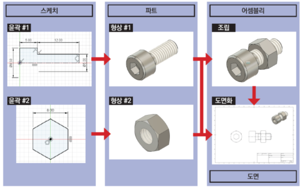

[16차시] FUSION_사전 준비
1. FUSION 스케치 준비
1.1. 스케치 개요
- 3D 형상을 생성하는 부품 모델링 작업은 형상화 명령어(작성 또는 수정)를 통해서 생성할 수 있음.
- 스케치 → 파트 → 어셈블리


1.1.1. 스케치 환경
- 프로파일은 대부분의 작업이 2D 평면에서 이루어짐.

1.1.2. 스케치 작업 평면
기준 원점 평면

기존 작업 형상의 평면

1.1.3. 스케치 시작과 종료
- 스케치 작업을 시작하기 위해서는 스케치를 작업할 평면을 선택한 다음 명령을 실행하는 방법, 명령을 실행한 다음 스케치를 작업할 평면을 선택하는 방법이 있음.

3D 형상화 작업을 위한 스케치 종료
- 스케치 작업을 완료한 후 3D 형상화 작업을 하기 위해 스케치를 종료할 때에는 우측 상단의 [스케치 마무리] 버튼을 클릭함.

2. FUSION 스케치 시작
- 2D CAD에서는 사각형을 그린 다음 특별한 명령어 없이 위치 변경이나 크기 변경을 할 수 없음.
- 2D CAD에서는 2D 형상을 만들기 위해서 형상에 대한 정확한 수치를 요구하기 때문에 형상에 대한 크기를 예측하고 작업을 진행해야 함.

2.1. 스케치 작업 도구
- Fusion에서 스케치 작업을 할 때 필요한 작성 및 수정 도구

구속조건 개요 및 도구
- 스케치 작업 후 3D 형상을 작업하기 전에 2D 상태에서의 스케치 요소들을 완전히 구속하여야 함.
- 단, 간단한 형상의 검토를 수행할 경우 스케치 형상에 대한 구속 없이도 3D 피처 작업을 할 수 있음.
- 스케치 요소에 구속 조건이 과도하게 부여되거나 오류 발생 시 구속 조건을 선택해 삭제할 수 있으며, 구속 조건의 표시 여부는 사용자가 선택할 수 있음.
- 스케치가 완전하게 구속되지 않았다는 것은, 형상의 상태 또는 관계(수평, 수직, 직각 등) 및 크기(치수)에 대한 정의가 되어 있지 않아 형상이 완전하지 않은 상태를 말함.
- 스케치를 구속하는데 필요한 명령은 스케치 작업 중 메뉴에서 확인이 가능함.

구속조건 보이기 및 삭제하기
- 스케치 요소에 부여된 구속조건의 가시성은
스케치 팔레트에서 제어할 수 있음.

- 구속조건을 선택해 Delete 키를 누르거나
해당 구속 조건 아이콘에서 마우스 오른쪽
버튼을 클릭해 ‘삭제’를 클릭하여
구속조건을 삭제할 수 있음.

프로파일과 원점의 관계
- 스케치 작업을 할 때 프로파일의 위치와 원점과의 관계는 중요함.
- 프로파일과 원점의 배치 정보가 없으면 스케치 요소를 완전하게 구속할 수 없기 때문임.
- 프로파일과 원점의 배치 정보는 형상에 따라 달라질 수 밖에 없음.

프로파일 형상에 따른 원점의 위치 예시